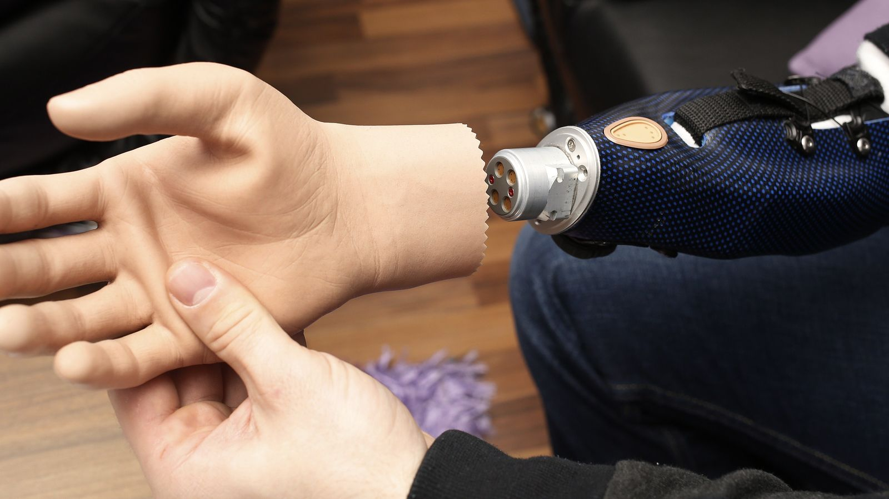
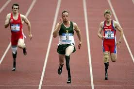

"A cybernetic organism or “cyborg” in IT is defined as an organism with both biological and technological components. In some definitions, a cyborg is described as a hypothetical or fictional creation. However, in a technical sense, humans can be seen as cyborgs in various types of situations, including the use of artificial implants.
A person could be considered a cyborg when they are outfitted with implants such as artificial heart valves, cochlear implants or insulin pumps. A person could even be called a cyborg when they are using specific wearable technologies like Google Glass, or even using laptops or mobile devices to do work."

In medicine, there are two important and different types of cyborgs: the restorative and the enhanced.Restorative technologies "restore lost function, organs, and limbs" while enhanced cyborg "follows a principle, and it is the principle of optimal performance: maximising output and minimising input
Military organizations' research has recently focused on the utilization of cyborg animals for the purposes of a supposed tactical advantage. DARPA has announced its interest in developing "cyborg insects" to transmit data from sensors implanted into the insect during the pupal stage.

In 2016 the first cyborg Olympics were celebrated in Zurich Switzerland. Cybathlon 2016 were the first Olympics for cyborgs and the first worldwide and official celebration of cyborg sports. In this event, 16 teams of people with disabilities used technological developments to turn themselves into cyborg athletes.